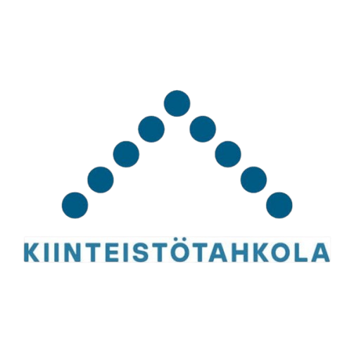

Kiinteistötahkola
Isännöitsijä
Keski-Suomi · 2026–

Työskentelen taloyhtiöiden operatiivisessa hallinnossa ja vastaan 20 taloyhtiön arjen johtamisesta, kokoushallinnosta sekä talouden seurannan ja suunnittelun tukemisesta. Työssä korostuvat asiakastyö, taloudellinen hahmotus, kokonaisuuksien hallinta ja kyky toimia useiden sidosryhmien kanssa. Viimeisimmän asiakastyytyväisyyskyselyn NPS oli 40.